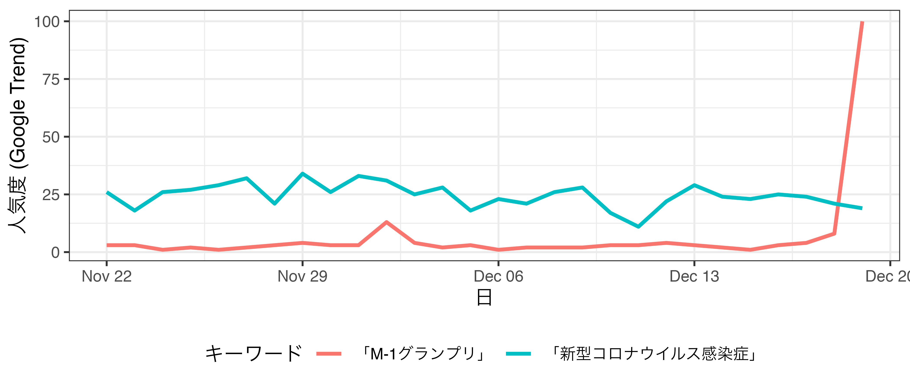
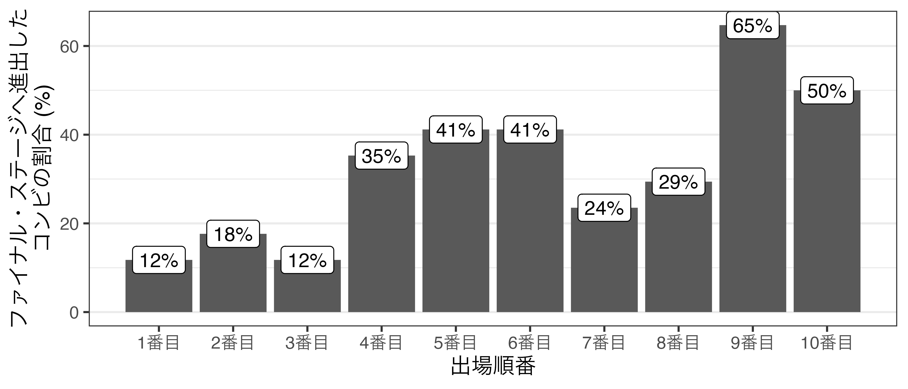
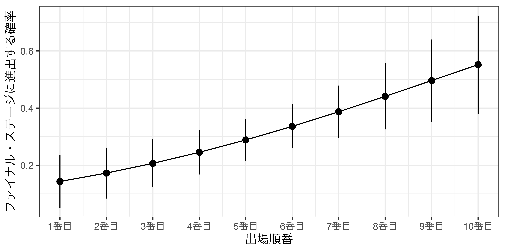
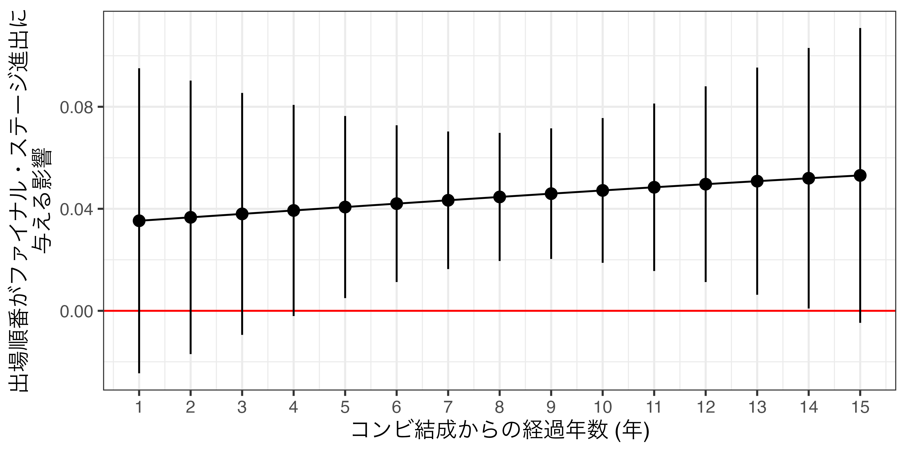
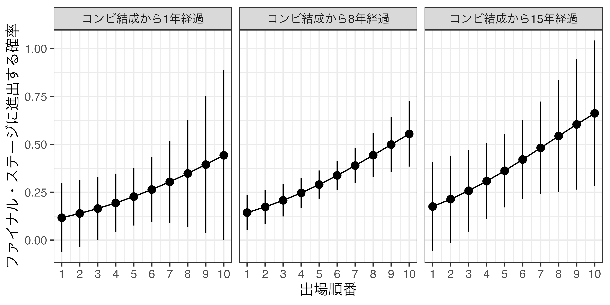

M-1グランプリにおける出場順番の重要性
問題背景
日本一の漫才師が選ばれるM-1グランプリは2001年に第1回の大会が開催された以来、年末の風物詩となっている1。株式会社ビデオリサーチの調査によると、第17回M-1グランプリ (2021年)の視聴率は関東で18.5%、関西で28.8%であり、日本国民の約2〜3割が視聴する番組でもある。M-1グランプリの高い人気はインターネット空間上でも確認できる。 図 1 はGoogle社が提供するGoogle Trendsから取得した2つのキーワードの人気度である。取得期間は2021年11月22日から2021年12月19日までの30日間である。2020年から話題性の極めて高い新型コロナウィルス感染症の人気度と比較した場合、M-1グランプリの決勝が放映された2021年12月19日は新型コロナウィルス感染症を圧倒する人気度を示している。
毎年12月下旬に放送されるM-1グランプリは数千組2から選ばれた上位8〜9組3がネタを披露する決勝舞台である。決勝舞台は決勝舞台に進んだ上位8〜9組がエントリー順番で抽選を行い、ネタ披露順番を決める。また、第2回大会から導入された敗者復活制度によって決勝舞台に進出した1組は自動的に最後の順番となる。9〜10組は抽選結果に沿った順番でネタを披露し、7人の審査委員4がそれぞれ100点満点で採点を行う。そして上位3組がファイナル・ステージへ進出し、新しいネタを披露する。ファイナル・ステージの場合、点数制でなく、7人による投票で勝者が決まる仕組みである。
この評価において重要視されるのがネタの披露順番である。 図 2 は決勝舞台における出場順番とファイナル・ステージへ進出した組の割合を示したものである。ファイナル・ステージへ進出する傾向が最も高い順番は9番目と10番目であり、それぞれ65%、50%の組がファイナル・ステージへ進出したことが分かる。9番目が10番目よりも高いのは第2回大会から第12回大会までは決勝参加者が9組であり、この時期は9番目は最後の順番だからである。このように9番目、10番目の参加者は比較的評価が高い一方、最初の3組までの評価は決して高くなく、ファイナル・ステージへ進出した組はこれまで約15%前後である。つまり、ネタの披露順番と評価には密接な関係があると考えられる。

以上の傾向は上位3組が競争するファイナル・ステージでも観察される。これまでの17回のデータを見ると、1番目の組が優勝した例は3回 (18%)、2番目は6回 (35%)、3番目に披露した組の優勝割合は8回 (47%)であった。つまり、決勝舞台 (1st stage)、ファイナル・ステージ (2nd stage)関係なく、出場順番と成績には密接な関係があると考えられる。本稿では以上の傾向が偶然によるものか、あるいは統計的に有意な傾向であるかを検証する。次節では本稿で検証する仮説について述べる。
理論・仮説
以下では以上の問いに対する暫定的な答えとして2つの仮説を提示する。
出場順番が上位3組のみが進出できるファイナル・ステージへの進出に与える影響は、2つの側面から考えることができる。1つ目は漫才師の心理的な要因に与える影響であり、2つ目は審査委員側に与える影響である。
1点目は出場順番と漫才師の緊張、そして「場の雰囲気」と関係する。誰も披露していない舞台に立つ場合、そうでない参加者に比べより緊張しやすいと考えられる。また、1時間以上の番組において序盤の参加者は「場を温める」役割も果たすこととなる。これは逆にいうと、場が温まっていない舞台でネタを披露することを意味する。
2点目は出場順番が遅いほど、審査委員からの評価が高い点である。たとえば、Ginsburgh (2003)は映画、書籍、ピアノ・コンクールにおけるタイミングと成功の関係に注目した (Ginsburgh 2003)。この中でピアノ・コンクールの場合、舞台の順番が遅いほど、審査委員からより高い評価を得ることが明らかとなった。順番が参加者の能力と無関係に決まることを考えると、順番そのものが評価に与える効果は存在すると考えられる。以上の理由により、出場が遅いほど、よりファイナル・ステージへ進出するといった仮説が導かれる。
- 仮説1: 出場順番が遅いほど、ファイナル・ステージへ進出確率が増加する。
- 帰無仮説1: 出場順番はファイナル・ステージへ進出確率に影響を与えない。
- 対立仮説1: 出場順番はファイナル・ステージへ進出確率に影響を与える。
以上の仮説が支持される場合、更に一つの仮説が考えられる。それは出場順番がファイナル・ステージ進出有無に与える影響は一定ではないということである。たとえば、結成から時間が経ったベテラン漫才師の場合、より安定した漫才ができるだろう。つまり、出場順番と舞台の完成度の結びつきが弱いため、出場順番の影響を受けにくいと考えられる。一方、舞台経験が比較的浅い漫才師の場合、出場順番は重要である。なぜなら、早い順番は出演者にとって緊張しやすい環境であり、ネタ本来の面白さを100%アピールすることが難しいからである。以上のことをまとめると、コンビ結成から経過年数が長い漫才師は出場順番と進出確率の結びつきが弱く、経過年数が浅い漫才師は出場順番と進出確率には正の関係があると考えられる。
- 仮説2: 出場順番はファイナル・ステージへ進出確率に影響はコンビ結成からの経過年数が浅いほど大きい。
- 帰無仮説2: 出場順番はファイナル・ステージへ進出確率に影響はコンビ結成からの経過年数と関係がない。
- 対立仮説2: 出場順番はファイナル・ステージへ進出確率に影響はコンビ結成からの経過年数と関係がある。
データ
前節で述べた仮説を検証するために、本稿では宋財泫氏が公開した2001年 (第1回)から2021年 (第17回)までの決勝舞台における参加者データ5を使用する。応答変数はファイナル・ステージへの進出有無を示すバイナリー変数であり、主な説明変数は出場順番 (1番目から10番目まで)、調整変数はコンビ結成から経過年数である。元のデータには経過年数の変数がなかったため、本稿ではM-1グランプリ開催年から結成年を引いた値を結成年数として使用する。その他の統制変数としては、これまで決勝舞台に進出した回数と、敗者復活者が否かを示すダミー変数6を用いる。
表 1 は本稿で用いるデータの記述統計量である7。出場順番の最大値は10であるものの、第1章で述べたように、一部の大会 (第2回から第12回大会まで)は敗者復活組を含め9組のみで決勝が行われたため、最大値が9となる。また、M-1グランプリの場合、出場資格に漫才歴の上限が設けられている。第1・2回は10年未満、第3〜10回は10年以下、第11回以降は15年以下であるため、コンビ結成からの経過年数の最大値も大会ごとに異なることに注意して頂きたい。
| 変数 | 平均値 | 標準偏差 | 最小値 | 最大値 |
|---|---|---|---|---|
| ファイナルステージへの進出有無 | 0.314 | 0.466 | 0 | 1 |
| 出場順番 | 5.189 | 2.715 | 1 | 10 |
| コンビ結成からの経過年数 | 7.843 | 3.386 | 1 | 15 |
| 決勝舞台の回数 | 0.918 | 1.369 | 0 | 8 |
| 敗者復活ダミー | 0.101 | 0.302 | 0 | 1 |
分析結果
応答変数であるファイナル・ステージへの進出有無は0と1のみの値をとるバイナリー変数であるため、本稿では以下のようなモデル (ロジスティック回帰分析)で検証を行う。順番と結成からの経過年数の間の交互作用も含めて検証するために、モデルには2つの交差項も同時に投入した。
\[ \begin{aligned} \text{Pr(ファイナル進出)} = & \text{logistic}(y^*) = \frac{1}{1 + e^{-y^*}} \\ y^* = & \alpha + \beta_1 \text{出場順番} + \beta_2 \text{結成からの経過年数} + \beta_3 \text{決勝進出回数} + \\ & \beta_4 \text{敗者復活ダミー} + \beta_5 \text{出場順番} \cdot \text{結成からの経過年数}. \end{aligned} \]
以下の 表 2 は以上のモデルをロジスティック回帰分析して得られたパラメーター (\(\alpha\)と\(\beta\))の推定値である。
| 係数 | 標準誤差 | z統計量 | p値 | |
|---|---|---|---|---|
| 切片 | −2.644 | 1.198 | −2.207 | 0.027 |
| 出場順番 | 0.204 | 0.205 | 0.998 | 0.318 |
| 経過年数 | 0.032 | 0.135 | 0.235 | 0.814 |
| 決勝進出回数 | 0.310 | 0.138 | 2.239 | 0.025 |
| 敗者復活ダミー | 0.233 | 0.576 | 0.404 | 0.686 |
| 出場順番 * 経過年数 | 0.004 | 0.023 | 0.153 | 0.878 |
まず、出場順番が遅いほど、ファイナル・ステージへ進出確率が増加するという仮説1の分析結果から紹介したい。ただし、本稿のモデルにおいて出場順番の効果はコンビ結成からの経過年数にも影響を受けるため、特定の年数に固定する必要がある。ここでは平均値である7.834年に固定し、その他の説明変数はすべて周辺化した予測確率を示す。
図 3 は、出場順番ごとのファイナル・ステージへの進出確率の予測値とその95%信頼区間である。出場順番が1番目の組における予測確率は約14.8% (95%信頼区間は下限5.3%、上限24.2%)であり、10番目の組のそれは54.4% (95%信頼区間は下限37.1%、上限71.6%)である。つまり、1番目と10番目の組におけるファイナル・ステージへの進出確率には約39.6%ポイントの差があり、非常に大きいと考えられる。したがって、本稿の仮説1は支持される8。

つづいて、仮説2の分析結果を紹介する。 図 4 はコンビ結成からの経過年数（1年単位）ごとの出場順番の限界効果とその95%信頼区間を示したものである。限界効果の傾向を見ると、出場順番が持つ効果はコンビ結成の経過年数が経つほど高くなる。つまり、ベテランのコンビほど出場順番の効果が大きいことを意味する。したがって、本稿の仮説2は受容されない。また、出場順番がファイナル・ステージへの進出に統計的に有意な影響を与えるのは、コンビ結成からの経過年数が5年以上、13年以下のコンビであり、4年以下、または14年以上のコンビにおいては影響が観察されなかった9。

最後に、コンビ結成からの経過年数ごとに、出場順番とファイナル・ステージへの進出確率の予測値を示す。 図 5 はコンビ結成からの経過年数が1年、8年、15年の場合の図である。まず、コンビ結成からの経過年数と関係なく、出場順番が遅いほどファイナル・ステージへ進出する確率が増加することが確認できる。ただし、コンビ結成からの経過年数が1年、または15年の場合、この増加傾向は統計的に有意なものではない。つまり、漫才歴が極端に短い、または長い組は、出場順番が成績に影響を与えているとは言えない10。

結論
本稿では、これまで開催された17回のM-1グランプリの参加者データから、ネタの披露順番が成績に与える影響を明らかにした。具体的には計9〜10組が競争する決勝舞台におけるネタの披露順番とファイナル・ステージへ進出 (上位3組)有無の関係 (仮説1)、そして、この関係がコンビ結成からの経過年数が浅いほど順番の影響を受ける (仮説2)といった2つの仮説を検証した。分析の結果、仮説1は支持され、出場順番が遅いほど、ファイナル・ステージへ進出する傾向があることが明らかになった。具体的に10番目の組は1番目の組に比べ、ファイナル・ステージへ進出確率が約39.6%ポイント高かった。一方、コンビ結成からの経過年数が長いほど順番の影響力が大きくなるといった、本稿の仮説2とは逆の結果が得られ、統計的に有意でないことから仮説2は支持されなかった。
本稿の結果はM-1グランプリにおける評価・審査の制度設計を再考する必要があることを示していると考えられる。ネタの披露順番は漫才師の能力と無関係に決まるものの、漫才師の能力以外の要因が評価に影響を与えることは避けるべきであろう。たとえば、審査委員ごと異なる順番でネタを審査することも考えられるだろう。ただし、この場合、生放送でなく録画放送にする必要があるため、M-1グランプリの話題性が低下する可能性もある。また、敗者復活組が必ず最後の順番になることから、現行制度は敗者復活組に極めて有利な制度となっている。実際、敗者復活が導入された計16回の中、8回の大会において敗者復活組がファイナル・ステージへ進出している。敗者復活組を決勝舞台の最初に選出し、敗者復活組を含めた順番抽選を行うことで改善できると考えられる。あるいは、ファイナル・ステージと同様、すべてのネタの披露が終わってから審査を行うことも改善策の一つである。
他にも評価に影響を与える要因は複数あるだろう。選挙制度の側面から考えると、決勝舞台は定数3のスコアリング・ルール（中でもcardinal voting）として解釈できる。しかし、スコアリング・ルールは棄権防止性と中立性といった性質を備えているものの、ペア敗者基準 (コンドルセ敗者基準)すらも満たしていない点で、通常の多数決と大きな違いがない (酒井 2015)。同じスコアリング・ルールを採用するなら、ボルダー式投票を採用することで、ペア敗者基準やベア勝者弱基準を満たせることが可能となり、より審査委員の選好を的確に反映させることができよう。また、ファイナル・ステージにおける審査方法は定数1の単記移譲式投票制度、いわゆる単純多数決である。2つのステージが異なる投票方式を有することに対する理論的根拠がない限り、両制度をボルダー式投票11に統一することがより客観性が担保された審査ができるだろう。
参考文献
- Ginsburgh, Victor. 2003. “Awards,Success and Aesthetic Quality in the Arts,” Journal of Economic Perspectives, 17(2): 99–111.
- 酒井豊貴. 2015.『多数決を疑うー社会的選択理論とは何か』岩波新書.
注
ただし、2011年から2014年までの4年間は未開催↩︎
第17回M-1グランプリ (2021年)の場合、エントリー数は6017組である。↩︎
敗者復活の1組を加えて、計9〜10組である。ただし、第1回大会 (2001年)の場合、敗者復活組なしで10組が競った。↩︎
例外として、第11回と第12回大会はそれぞれ9人、5人であった。↩︎
データの詳細については、入手先であるhttps://github.com/JaehyunSong/M-1_Grand_Pixを参照されたい。↩︎
敗者復活は必ず順番が最後となるため、順番に影響を与えるだけでなく、最後に選ばれたという注目度の高さから評価に影響を与える可能性の高い交絡要因として機能する可能性がある。↩︎
本データには他にもいくつかの変数が含まれているものの、ここでは本稿で用いる変数のみの記述統計量を掲載する。↩︎
コンビ結成からの経過年数が7.834年の場合、出場順番の限界効果は約0.043 (95%信頼区間は下限0.017、上限0.068)であり、\(p < 0.001\)であることから、帰無仮説1は棄却される。また、平均値でなく中央値である8年でも、限界効果は0.043 (95%信頼区間は下限0.018、上限0.068)であり、\(p < 0.001\)であることから、帰無仮説1は棄却される。↩︎
ただし、これにはコンビ結成からの経過年数ごとのサンプルサイズの影響が大きいと考えられる。M-1グランプリの決勝に進出したこれまでの159組の中、経過年数が5年以上10年以下のコンビが計100組であり、全体の約63%を占める。つまり、経過年数が浅いコンビと長いコンビは比較的少数である。標準誤差はサンプルサイズに反比例することを考えると、自然な結果とも言えよう。↩︎
ただし、これには先述したサンプルサイズの問題が影響していると考えられる。↩︎
この場合、必然的に審査はすべてのネタ披露が終わってから行われることとなる。↩︎